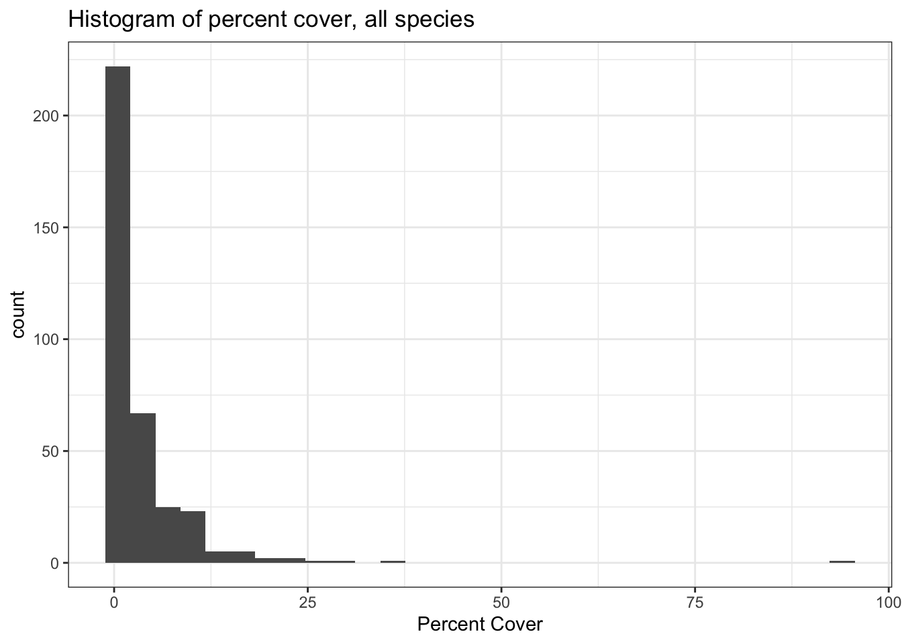
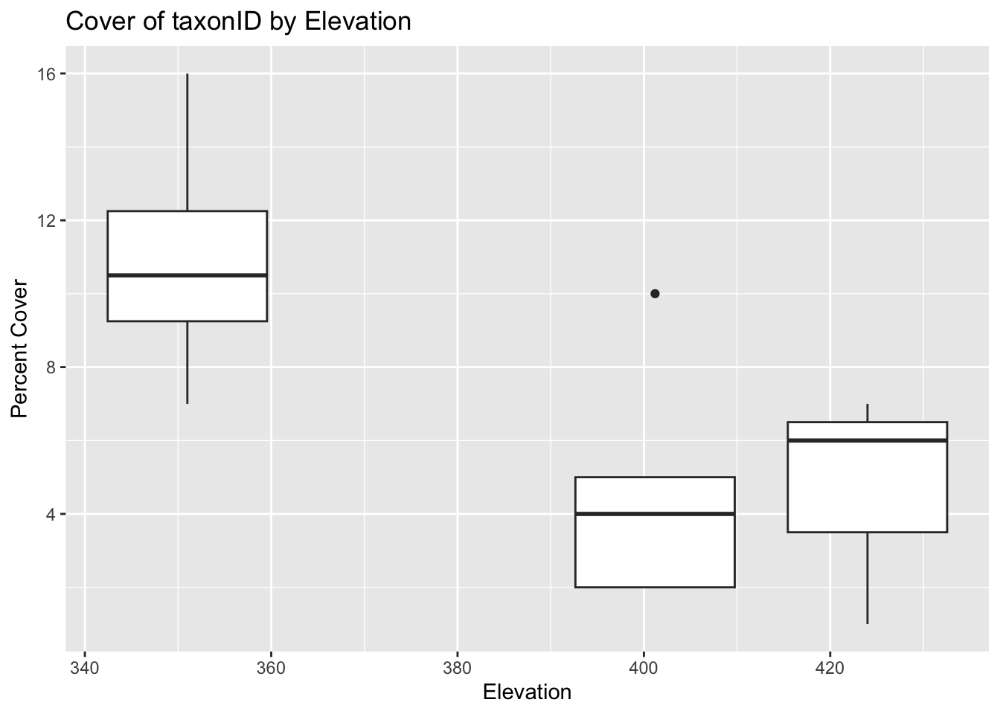

| family | n |
|---|---|
| Poaceae | 118 |
| NA | 113 |
| Asteraceae | 74 |
| Fabaceae | 43 |
| Cyperaceae | 17 |
| Euphorbiaceae | 13 |
| Asclepiadaceae | 12 |
| Cornaceae | 12 |
| Lamiaceae | 7 |
| Solanaceae | 7 |
| Rhamnaceae | 5 |
| Violaceae | 5 |
| Anacardiaceae | 4 |
| Caprifoliaceae | 4 |
| Rubiaceae | 4 |
| Acanthaceae | 3 |
| Boraginaceae | 3 |
| Oxalidaceae | 3 |
| Rosaceae | 3 |
| Celastraceae | 2 |
| Cupressaceae | 2 |
| Rutaceae | 2 |
| Ulmaceae | 2 |
| Apiaceae | 1 |
| Cuscutaceae | 1 |
| Fagaceae | 1 |
| Linaceae | 1 |
| Lythraceae | 1 |
| Nyctaginaceae | 1 |
| Onagraceae | 1 |
| Polygalaceae | 1 |
| Santalaceae | 1 |
| Verbenaceae | 1 |
Konza Vegetation Analysis
Introduction
This analysis will look at vegetation data from the Konza National Ecological Observatory Network (NEON) site located near Manhhattan, KS. It will use tidyverse packages to wrangle and visualize some of the data.
Loading the data
The data provided in csv files. We’ll use the tidyverse package readr to load it into R
Data summarizing with dplyr
We’ll next use the dplyr package to summarize some diffeent aspects of the data.
This analysis showed that Poaceae and Asteraceae are among the most common family found in these plots
| family | mean_pcnt_cover | sd_pcnt_cover |
|---|---|---|
| NA | 21.3938053 | 33.8664955 |
| Fagaceae | 16.0000000 | NA |
| Cornaceae | 6.7500000 | 4.4133063 |
| Poaceae | 5.2796610 | 9.3729795 |
| Fabaceae | 4.8139535 | 7.0962962 |
| Ulmaceae | 4.0000000 | 1.4142136 |
| Rhamnaceae | 3.8000000 | 3.1144823 |
| Anacardiaceae | 3.7500000 | 1.5000000 |
| Asteraceae | 2.5135135 | 4.7224130 |
| Rosaceae | 2.3333333 | 1.5275252 |
| Boraginaceae | 2.0000000 | 2.5980762 |
| Celastraceae | 2.0000000 | 1.4142136 |
| Lythraceae | 2.0000000 | NA |
| Rutaceae | 2.0000000 | 1.4142136 |
| Santalaceae | 2.0000000 | NA |
| Cyperaceae | 1.6176471 | 1.5565327 |
| Lamiaceae | 1.4285714 | 0.9322272 |
| Solanaceae | 1.2857143 | 0.9063270 |
| Apiaceae | 1.0000000 | NA |
| Asclepiadaceae | 1.0000000 | 1.2792043 |
| Verbenaceae | 1.0000000 | NA |
| Rubiaceae | 0.8750000 | 0.7500000 |
| Acanthaceae | 0.6666667 | 0.2886751 |
| Oxalidaceae | 0.6666667 | 0.2886751 |
| Euphorbiaceae | 0.6538462 | 0.4274252 |
| Caprifoliaceae | 0.6250000 | 0.2500000 |
| Violaceae | 0.6000000 | 0.2236068 |
| Cupressaceae | 0.5000000 | 0.0000000 |
| Cuscutaceae | 0.5000000 | NA |
| Linaceae | 0.5000000 | NA |
| Nyctaginaceae | 0.5000000 | NA |
| Onagraceae | 0.5000000 | NA |
| Polygalaceae | 0.5000000 | NA |
This analysis showed that the largest percent cover is the NA taxa which means it likely wasn’t able to be identified, but the highest mean percent cover at 16% across the plots was Fagaceae.
| family | mean_pcnt_cover | sd_pcnt_cover |
|---|---|---|
| NA | 23.6372549 | 37.5739376 |
| Fabaceae | 5.9807692 | 8.2649631 |
| Poaceae | 5.6785714 | 11.6656425 |
| Cornaceae | 4.6250000 | 3.0207615 |
| Asteraceae | 4.2166667 | 6.8778547 |
| Rutaceae | 3.0000000 | NA |
| Rosaceae | 2.3333333 | 1.5275252 |
| Lythraceae | 2.0000000 | NA |
| Cyperaceae | 1.4545455 | 1.5240496 |
| Lamiaceae | 1.4285714 | 0.9322272 |
| Solanaceae | 1.2857143 | 0.9063270 |
| Verbenaceae | 1.0000000 | NA |
| Caprifoliaceae | 0.7500000 | 0.3535534 |
| Oxalidaceae | 0.7500000 | 0.3535534 |
| Acanthaceae | 0.6666667 | 0.2886751 |
| Asclepiadaceae | 0.6250000 | 0.2500000 |
| Cuscutaceae | 0.5000000 | NA |
| Euphorbiaceae | 0.5000000 | 0.0000000 |
| Linaceae | 0.5000000 | NA |
| Nyctaginaceae | 0.5000000 | NA |
| Violaceae | 0.5000000 | NA |
Next we’ll learn to use mutate(), which is a function to create a new column based on contents from an existing column.
| scientificName | family | percentCover | propCover |
|---|---|---|---|
| Schizachyrium scoparium (Michx.) Nash | Poaceae | 7.0 | 0.070 |
| Lespedeza violacea (L.) Pers. | Fabaceae | 8.0 | 0.080 |
| Lespedeza capitata Michx. | Fabaceae | 1.0 | 0.010 |
| NA | NA | 2.0 | 0.020 |
| Sporobolus heterolepis (A. Gray) A. Gray | Poaceae | 4.0 | 0.040 |
| Andropogon gerardii Vitman | Poaceae | 10.0 | 0.100 |
| Dalea candida Michx. ex Willd. | Fabaceae | 0.5 | 0.005 |
| Sorghastrum nutans (L.) Nash | Poaceae | 5.0 | 0.050 |
| Brickellia eupatorioides (L.) Shinners | Asteraceae | 3.0 | 0.030 |
| Amorpha canescens Pursh | Fabaceae | 2.0 | 0.020 |
| NA | NA | 93.0 | 0.930 |
| Symphyotrichum ericoides (L.) G.L. Nesom | Asteraceae | 3.0 | 0.030 |
| NA | NA | 3.0 | 0.030 |
| Schizachyrium scoparium (Michx.) Nash | Poaceae | 2.0 | 0.020 |
| Dichanthelium oligosanthes (Schult.) Gould | Poaceae | 0.5 | 0.005 |
| Asclepias verticillata L. | Asclepiadaceae | 1.0 | 0.010 |
| Cornus drummondii C.A. Mey. | Cornaceae | 2.0 | 0.020 |
| Cornus drummondii C.A. Mey. | Cornaceae | 4.0 | 0.040 |
| NA | NA | 95.0 | 0.950 |
| Carex sp. | Cyperaceae | 0.5 | 0.005 |
| Cornus drummondii C.A. Mey. | Cornaceae | 10.0 | 0.100 |
| NA | NA | 3.0 | 0.030 |
| Andropogon gerardii Vitman | Poaceae | 8.0 | 0.080 |
| Carex sp. | Cyperaceae | 0.5 | 0.005 |
| Schizachyrium scoparium (Michx.) Nash | Poaceae | 7.0 | 0.070 |
| Bouteloua curtipendula (Michx.) Torr. | Poaceae | 0.5 | 0.005 |
| Ambrosia psilostachya DC. | Asteraceae | 0.5 | 0.005 |
| Sorghastrum nutans (L.) Nash | Poaceae | 0.5 | 0.005 |
| Andropogon gerardii Vitman | Poaceae | 4.0 | 0.040 |
| Panicum virgatum L. | Poaceae | 8.0 | 0.080 |
| Physalis pumila Nutt. | Solanaceae | 1.0 | 0.010 |
| Lespedeza violacea (L.) Pers. | Fabaceae | 10.0 | 0.100 |
| Schizachyrium scoparium (Michx.) Nash | Poaceae | 4.0 | 0.040 |
| Bouteloua curtipendula (Michx.) Torr. | Poaceae | 3.0 | 0.030 |
| Baptisia australis (L.) R. Br. | Fabaceae | 3.0 | 0.030 |
| NA | NA | 95.0 | 0.950 |
| NA | NA | 0.5 | 0.005 |
| Sporobolus heterolepis (A. Gray) A. Gray | Poaceae | 0.5 | 0.005 |
| Vernonia baldwinii Torr. | Asteraceae | 0.5 | 0.005 |
| NA | NA | 5.0 | 0.050 |
| Cornus drummondii C.A. Mey. | Cornaceae | 2.0 | 0.020 |
| Sporobolus heterolepis (A. Gray) A. Gray | Poaceae | 1.0 | 0.010 |
| Andropogon gerardii Vitman | Poaceae | 10.0 | 0.100 |
| NA | NA | 7.0 | 0.070 |
| NA | NA | 91.0 | 0.910 |
| NA | NA | 2.0 | 0.020 |
| Panicum virgatum L. | Poaceae | 6.0 | 0.060 |
| NA | NA | 1.0 | 0.010 |
| Salvia azurea Michx. ex Lam. | Lamiaceae | 1.0 | 0.010 |
| Euphorbia cyathophora Murray | Euphorbiaceae | 0.5 | 0.005 |
| Bouteloua curtipendula (Michx.) Torr. | Poaceae | 5.0 | 0.050 |
| NA | NA | 0.5 | 0.005 |
| Ruellia humilis Nutt. | Acanthaceae | 0.5 | 0.005 |
| Symphyotrichum oblongifolium (Nutt.) G.L. Nesom | Asteraceae | 0.5 | 0.005 |
| NA | NA | 1.0 | 0.010 |
| Lespedeza capitata Michx. | Fabaceae | 0.5 | 0.005 |
| Symphyotrichum ericoides (L.) G.L. Nesom | Asteraceae | 3.0 | 0.030 |
| Lespedeza violacea (L.) Pers. | Fabaceae | 23.0 | 0.230 |
| Tragia ramosa Torr. | Euphorbiaceae | 0.5 | 0.005 |
| Dalea purpurea Vent. | Fabaceae | 0.5 | 0.005 |
| Ruellia humilis Nutt. | Acanthaceae | 0.5 | 0.005 |
| Sporobolus compositus (Poir.) Merr. | Poaceae | 2.0 | 0.020 |
| Cornus drummondii C.A. Mey. | Cornaceae | 5.0 | 0.050 |
| Sorghastrum nutans (L.) Nash | Poaceae | 16.0 | 0.160 |
| Solidago missouriensis Nutt. | Asteraceae | 0.5 | 0.005 |
| Lespedeza violacea (L.) Pers. | Fabaceae | 2.0 | 0.020 |
| Amorpha canescens Pursh | Fabaceae | 3.0 | 0.030 |
| Ambrosia psilostachya DC. | Asteraceae | 0.5 | 0.005 |
| Asclepias verticillata L. | Asclepiadaceae | 0.5 | 0.005 |
| Brickellia eupatorioides (L.) Shinners | Asteraceae | 0.5 | 0.005 |
| NA | NA | 1.0 | 0.010 |
| Sorghastrum nutans (L.) Nash | Poaceae | 2.0 | 0.020 |
| NA | NA | 1.0 | 0.010 |
| Sorghastrum nutans (L.) Nash | Poaceae | 4.0 | 0.040 |
| Symphoricarpos orbiculatus Moench | Caprifoliaceae | 1.0 | 0.010 |
| Carex sp. | Cyperaceae | 0.5 | 0.005 |
| Andropogon gerardii Vitman | Poaceae | 11.0 | 0.110 |
| Carex spp. | Cyperaceae | 0.5 | 0.005 |
| Bouteloua curtipendula (Michx.) Torr. | Poaceae | 3.0 | 0.030 |
| Solidago missouriensis Nutt. | Asteraceae | 0.5 | 0.005 |
| Lespedeza violacea (L.) Pers. | Fabaceae | 35.0 | 0.350 |
| Lespedeza violacea (L.) Pers. | Fabaceae | 0.5 | 0.005 |
| Salvia azurea Michx. ex Lam. | Lamiaceae | 3.0 | 0.030 |
| Amorpha canescens Pursh | Fabaceae | 20.0 | 0.200 |
| NA | NA | 89.0 | 0.890 |
| NA | NA | 2.0 | 0.020 |
| Schizachyrium scoparium (Michx.) Nash | Poaceae | 10.0 | 0.100 |
| NA | NA | 6.0 | 0.060 |
| Carex sp. | Cyperaceae | 0.5 | 0.005 |
| Artemisia ludoviciana Nutt. | Asteraceae | 0.5 | 0.005 |
| Andropogon gerardii Vitman | Poaceae | 13.0 | 0.130 |
| Sporobolus compositus (Poir.) Merr. | Poaceae | 0.5 | 0.005 |
| Baptisia australis (L.) R. Br. | Fabaceae | 2.0 | 0.020 |
| Brickellia eupatorioides (L.) Shinners | Asteraceae | 0.5 | 0.005 |
| Sporobolus heterolepis (A. Gray) A. Gray | Poaceae | 0.5 | 0.005 |
| NA | NA | 94.0 | 0.940 |
| Bouteloua curtipendula (Michx.) Torr. | Poaceae | 0.5 | 0.005 |
| Amorpha canescens Pursh | Fabaceae | 7.0 | 0.070 |
| NA | NA | 9.0 | 0.090 |
| Symphyotrichum oblongifolium (Nutt.) G.L. Nesom | Asteraceae | 2.0 | 0.020 |
| Linum sulcatum Riddell | Linaceae | 0.5 | 0.005 |
| Dichanthelium oligosanthes (Schult.) Gould | Poaceae | 2.0 | 0.020 |
| Viola pedatifida G. Don | Violaceae | 0.5 | 0.005 |
| Sorghastrum nutans (L.) Nash | Poaceae | 12.0 | 0.120 |
| Dichanthelium oligosanthes (Schult.) Gould | Poaceae | 0.5 | 0.005 |
| Panicum virgatum L. | Poaceae | 6.0 | 0.060 |
| Symphyotrichum laeve (L.) Á. Löve & D. Löve | Asteraceae | 0.5 | 0.005 |
| Ceanothus herbaceus Raf. | Rhamnaceae | 2.0 | 0.020 |
| Viola sororia Willd. | Violaceae | 0.5 | 0.005 |
| Symphyotrichum laeve (L.) Á. Löve & D. Löve | Asteraceae | 2.0 | 0.020 |
| NA | NA | 0.5 | 0.005 |
| NA | NA | 2.0 | 0.020 |
| NA | NA | 0.5 | 0.005 |
| Symphyotrichum laeve (L.) Á. Löve & D. Löve | Asteraceae | 0.5 | 0.005 |
| Ulmus rubra Muhl. | Ulmaceae | 3.0 | 0.030 |
| NA | NA | 0.5 | 0.005 |
| Bouteloua curtipendula (Michx.) Torr. | Poaceae | 6.0 | 0.060 |
| Andropogon gerardii Vitman | Poaceae | 11.0 | 0.110 |
| NA | NA | 4.0 | 0.040 |
| Ulmus sp. | Ulmaceae | 5.0 | 0.050 |
| Juniperus virginiana L. | Cupressaceae | 0.5 | 0.005 |
| Oligoneuron rigidum (L.) Small | Asteraceae | 2.0 | 0.020 |
| Symphoricarpos orbiculatus Moench | Caprifoliaceae | 0.5 | 0.005 |
| Sorghastrum nutans (L.) Nash | Poaceae | 3.0 | 0.030 |
| Tridens flavus (L.) Hitchc. | Poaceae | 0.5 | 0.005 |
| NA | NA | 1.0 | 0.010 |
| Andropogon gerardii Vitman | Poaceae | 11.0 | 0.110 |
| Symphyotrichum oblongifolium (Nutt.) G.L. Nesom | Asteraceae | 2.0 | 0.020 |
| Bouteloua hirsuta Lag. | Poaceae | 1.0 | 0.010 |
| Stenosiphon linifolius (Nutt. ex James) Heynh. | Onagraceae | 0.5 | 0.005 |
| Lithospermum incisum Lehm. | Boraginaceae | 0.5 | 0.005 |
| Rhus glabra L. | Anacardiaceae | 3.0 | 0.030 |
| NA | NA | 0.5 | 0.005 |
| Helianthus hirsutus Raf. | Asteraceae | 2.0 | 0.020 |
| Andropogon gerardii Vitman | Poaceae | 9.0 | 0.090 |
| Cornus drummondii C.A. Mey. | Cornaceae | 10.0 | 0.100 |
| Bouteloua curtipendula (Michx.) Torr. | Poaceae | 3.0 | 0.030 |
| Toxicodendron radicans (L.) Kuntze | Anacardiaceae | 6.0 | 0.060 |
| Sporobolus heterolepis (A. Gray) A. Gray | Poaceae | 2.0 | 0.020 |
| Asclepias verticillata L. | Asclepiadaceae | 0.5 | 0.005 |
| Tragia ramosa Torr. | Euphorbiaceae | 0.5 | 0.005 |
| NA | NA | 51.0 | 0.510 |
| Sorghastrum nutans (L.) Nash | Poaceae | 1.0 | 0.010 |
| Desmodium glutinosum (Muhl. ex Willd.) Alph. Wood | Fabaceae | 17.0 | 0.170 |
| NA | NA | 0.5 | 0.005 |
| Onosmodium bejariense DC. ex A. DC. var. bejariense | Boraginaceae | 5.0 | 0.050 |
| Symphoricarpos orbiculatus Moench | Caprifoliaceae | 0.5 | 0.005 |
| NA | NA | 12.0 | 0.120 |
| Sorghastrum nutans (L.) Nash | Poaceae | 0.5 | 0.005 |
| Mimosa nuttallii (DC. ex Britton & Rose) B.L. Turner | Fabaceae | 0.5 | 0.005 |
| NA | NA | 87.0 | 0.870 |
| Amorpha canescens Pursh | Fabaceae | 2.0 | 0.020 |
| Carex sp. | Cyperaceae | 2.0 | 0.020 |
| Sporobolus compositus (Poir.) Merr. | Poaceae | 1.0 | 0.010 |
| Celastrus scandens L. | Celastraceae | 3.0 | 0.030 |
| Oligoneuron rigidum (L.) Small | Asteraceae | 1.0 | 0.010 |
| Helianthus hirsutus Raf. | Asteraceae | 0.5 | 0.005 |
| NA | NA | 91.0 | 0.910 |
| Asclepias verticillata L. | Asclepiadaceae | 0.5 | 0.005 |
| NA | NA | 0.5 | 0.005 |
| Bouteloua curtipendula (Michx.) Torr. | Poaceae | 2.0 | 0.020 |
| NA | NA | 0.5 | 0.005 |
| NA | NA | 24.0 | 0.240 |
| NA | NA | 3.0 | 0.030 |
| Dalea purpurea Vent. | Fabaceae | 0.5 | 0.005 |
| Helianthus hirsutus Raf. | Asteraceae | 3.0 | 0.030 |
| Bouteloua hirsuta Lag. | Poaceae | 2.0 | 0.020 |
| NA | NA | 0.5 | 0.005 |
| Cornus drummondii C.A. Mey. | Cornaceae | 16.0 | 0.160 |
| Brickellia eupatorioides (L.) Shinners | Asteraceae | 0.5 | 0.005 |
| NA | NA | 4.0 | 0.040 |
| Asclepias verticillata L. | Asclepiadaceae | 5.0 | 0.050 |
| Schizachyrium scoparium (Michx.) Nash | Poaceae | 10.0 | 0.100 |
| Andropogon gerardii Vitman | Poaceae | 11.0 | 0.110 |
| NA | NA | 96.0 | 0.960 |
| Sorghastrum nutans (L.) Nash | Poaceae | 0.5 | 0.005 |
| Liatris punctata Hook. | Asteraceae | 2.0 | 0.020 |
| NA | NA | 0.5 | 0.005 |
| Bouteloua curtipendula (Michx.) Torr. | Poaceae | 4.0 | 0.040 |
| Symphyotrichum laeve (L.) Á. Löve & D. Löve | Asteraceae | 0.5 | 0.005 |
| Amorpha canescens Pursh | Fabaceae | 1.0 | 0.010 |
| Helianthus hirsutus Raf. | Asteraceae | 10.0 | 0.100 |
| Viola sororia Willd. | Violaceae | 0.5 | 0.005 |
| Symphyotrichum oblongifolium (Nutt.) G.L. Nesom | Asteraceae | 0.5 | 0.005 |
| NA | NA | 0.5 | 0.005 |
| Asclepias verticillata L. | Asclepiadaceae | 0.5 | 0.005 |
| NA | NA | 36.0 | 0.360 |
| Bouteloua hirsuta Lag. | Poaceae | 0.5 | 0.005 |
| Schizachyrium scoparium (Michx.) Nash | Poaceae | 13.0 | 0.130 |
| Symphyotrichum oblongifolium (Nutt.) G.L. Nesom | Asteraceae | 0.5 | 0.005 |
| Brickellia eupatorioides (L.) Shinners | Asteraceae | 0.5 | 0.005 |
| Symphyotrichum laeve (L.) Á. Löve & D. Löve | Asteraceae | 0.5 | 0.005 |
| Carex sp. | Cyperaceae | 4.0 | 0.040 |
| Bouteloua curtipendula (Michx.) Torr. | Poaceae | 9.0 | 0.090 |
| Asclepias verticillata L. | Asclepiadaceae | 0.5 | 0.005 |
| Desmodium glutinosum (Muhl. ex Willd.) Alph. Wood | Fabaceae | 3.0 | 0.030 |
| Schizachyrium scoparium (Michx.) Nash | Poaceae | 8.0 | 0.080 |
| Bouteloua curtipendula (Michx.) Torr. | Poaceae | 0.5 | 0.005 |
| Stenaria nigricans (Lam.) Terrell | Rubiaceae | 0.5 | 0.005 |
| Andropogon gerardii Vitman | Poaceae | 10.0 | 0.100 |
| Carex sp. | Cyperaceae | 0.5 | 0.005 |
| Ceanothus herbaceus Raf. | Rhamnaceae | 1.0 | 0.010 |
| NA | NA | 0.5 | 0.005 |
| NA | NA | 13.0 | 0.130 |
| NA | NA | 0.5 | 0.005 |
| NA | NA | 7.0 | 0.070 |
| Liatris punctata Hook. | Asteraceae | 1.0 | 0.010 |
| NA | NA | 88.0 | 0.880 |
| Ceanothus herbaceus Raf. | Rhamnaceae | 3.0 | 0.030 |
| Cornus drummondii C.A. Mey. | Cornaceae | 7.0 | 0.070 |
| Schizachyrium scoparium (Michx.) Nash | Poaceae | 10.0 | 0.100 |
| Ambrosia psilostachya DC. | Asteraceae | 0.5 | 0.005 |
| Tragia ramosa Torr. | Euphorbiaceae | 0.5 | 0.005 |
| Symphyotrichum drummondii (Lindl.) G.L. Nesom | Asteraceae | 4.0 | 0.040 |
| Chamaesyce nutans (Lag.) Small | Euphorbiaceae | 0.5 | 0.005 |
| Viola pedatifida G. Don | Violaceae | 0.5 | 0.005 |
| NA | NA | 11.0 | 0.110 |
| NA | NA | 28.0 | 0.280 |
| NA | NA | 0.5 | 0.005 |
| Asclepias verticillata L. | Asclepiadaceae | 1.0 | 0.010 |
| NA | NA | 4.0 | 0.040 |
| Galium circaezans Michx. | Rubiaceae | 0.5 | 0.005 |
| Schizachyrium scoparium (Michx.) Nash | Poaceae | 8.0 | 0.080 |
| Andropogon gerardii Vitman | Poaceae | 8.0 | 0.080 |
| Ceanothus herbaceus Raf. | Rhamnaceae | 9.0 | 0.090 |
| Zizia aurea (L.) W.D.J. Koch | Apiaceae | 1.0 | 0.010 |
| Symphyotrichum sericeum (Vent.) G.L. Nesom | Asteraceae | 0.5 | 0.005 |
| NA | NA | 20.0 | 0.200 |
| Asclepias verticillata L. | Asclepiadaceae | 1.0 | 0.010 |
| NA | NA | 0.5 | 0.005 |
| Bouteloua curtipendula (Michx.) Torr. | Poaceae | 4.0 | 0.040 |
| Celastrus scandens L. | Celastraceae | 1.0 | 0.010 |
| NA | NA | 1.0 | 0.010 |
| Oligoneuron rigidum (L.) Small | Asteraceae | 2.0 | 0.020 |
| NA | NA | 0.5 | 0.005 |
| NA | NA | 0.5 | 0.005 |
| Schizachyrium scoparium (Michx.) Nash | Poaceae | 4.0 | 0.040 |
| Symphyotrichum laeve (L.) Á. Löve & D. Löve | Asteraceae | 2.0 | 0.020 |
| NA | NA | 80.0 | 0.800 |
| Ceanothus herbaceus Raf. | Rhamnaceae | 4.0 | 0.040 |
| Symphyotrichum oblongifolium (Nutt.) G.L. Nesom | Asteraceae | 1.0 | 0.010 |
| NA | NA | 0.5 | 0.005 |
| Sorghastrum nutans (L.) Nash | Poaceae | 4.0 | 0.040 |
| Cornus drummondii C.A. Mey. | Cornaceae | 11.0 | 0.110 |
| NA | NA | 1.0 | 0.010 |
| Symphyotrichum sericeum (Vent.) G.L. Nesom | Asteraceae | 0.5 | 0.005 |
| Lespedeza violacea (L.) Pers. | Fabaceae | 3.0 | 0.030 |
| Symphyotrichum laeve (L.) Á. Löve & D. Löve | Asteraceae | 2.0 | 0.020 |
| Desmodium glutinosum (Muhl. ex Willd.) Alph. Wood | Fabaceae | 0.5 | 0.005 |
| Carex sp. | Cyperaceae | 4.0 | 0.040 |
| Bouteloua hirsuta Lag. | Poaceae | 1.0 | 0.010 |
| Chamaesyce missurica (Raf.) Shinners | Euphorbiaceae | 1.0 | 0.010 |
| NA | NA | 1.0 | 0.010 |
| NA | NA | 39.0 | 0.390 |
| Liatris punctata Hook. | Asteraceae | 0.5 | 0.005 |
| NA | NA | 82.0 | 0.820 |
| Schizachyrium scoparium (Michx.) Nash | Poaceae | 6.0 | 0.060 |
| Mimosa nuttallii (DC. ex Britton & Rose) B.L. Turner | Fabaceae | 0.5 | 0.005 |
| Echinacea angustifolia DC. | Asteraceae | 0.5 | 0.005 |
| Cercis canadensis L. | Fabaceae | 11.0 | 0.110 |
| Schizachyrium scoparium (Michx.) Nash | Poaceae | 0.5 | 0.005 |
| Liatris punctata Hook. | Asteraceae | 1.0 | 0.010 |
| NA | NA | 0.5 | 0.005 |
| NA | NA | 0.5 | 0.005 |
| Schizachyrium scoparium (Michx.) Nash | Poaceae | 19.0 | 0.190 |
| Carex sp. | Cyperaceae | 0.5 | 0.005 |
| Symphyotrichum sericeum (Vent.) G.L. Nesom | Asteraceae | 0.5 | 0.005 |
| NA | NA | 81.0 | 0.810 |
| NA | NA | 10.0 | 0.100 |
| Juniperus virginiana L. | Cupressaceae | 0.5 | 0.005 |
| Helianthus hirsutus Raf. | Asteraceae | 1.0 | 0.010 |
| Amphicarpaea bracteata (L.) Fernald | Fabaceae | 1.0 | 0.010 |
| Chamaesyce missurica (Raf.) Shinners | Euphorbiaceae | 2.0 | 0.020 |
| Carex sp. | Cyperaceae | 0.5 | 0.005 |
| Amorpha canescens Pursh | Fabaceae | 5.0 | 0.050 |
| Symphyotrichum ericoides (L.) G.L. Nesom | Asteraceae | 0.5 | 0.005 |
| Andropogon gerardii Vitman | Poaceae | 7.0 | 0.070 |
| NA | NA | 0.5 | 0.005 |
| Sorghastrum nutans (L.) Nash | Poaceae | 4.0 | 0.040 |
| NA | NA | 67.0 | 0.670 |
| NA | NA | 0.5 | 0.005 |
| Panicum virgatum L. | Poaceae | 4.0 | 0.040 |
| Ambrosia psilostachya DC. | Asteraceae | 0.5 | 0.005 |
| Amorpha canescens Pursh | Fabaceae | 0.5 | 0.005 |
| NA | NA | 1.0 | 0.010 |
| NA | NA | 3.0 | 0.030 |
| Oxalis dillenii Jacq. | Oxalidaceae | 0.5 | 0.005 |
| Galium circaezans Michx. | Rubiaceae | 2.0 | 0.020 |
| Zanthoxylum americanum Mill. | Rutaceae | 1.0 | 0.010 |
| Mimosa nuttallii (DC. ex Britton & Rose) B.L. Turner | Fabaceae | 0.5 | 0.005 |
| Symphyotrichum ericoides (L.) G.L. Nesom | Asteraceae | 0.5 | 0.005 |
| NA | NA | 45.0 | 0.450 |
| Panicum virgatum L. | Poaceae | 0.5 | 0.005 |
| Amorpha canescens Pursh | Fabaceae | 3.0 | 0.030 |
| NA | NA | 0.5 | 0.005 |
| NA | NA | 5.0 | 0.050 |
| Onosmodium bejariense DC. ex A. DC. var. bejariense | Boraginaceae | 0.5 | 0.005 |
| Chamaesyce missurica (Raf.) Shinners | Euphorbiaceae | 0.5 | 0.005 |
| NA | NA | 7.0 | 0.070 |
| Brickellia eupatorioides (L.) Shinners | Asteraceae | 1.0 | 0.010 |
| Schizachyrium scoparium (Michx.) Nash | Poaceae | 5.0 | 0.050 |
| NA | NA | 71.0 | 0.710 |
| Dichanthelium oligosanthes (Schult.) Gould | Poaceae | 0.5 | 0.005 |
| Oligoneuron rigidum (L.) Small | Asteraceae | 0.5 | 0.005 |
| Symphyotrichum oblongifolium (Nutt.) G.L. Nesom | Asteraceae | 3.0 | 0.030 |
| NA | NA | 1.0 | 0.010 |
| Chamaesyce nutans (Lag.) Small | Euphorbiaceae | 0.5 | 0.005 |
| NA | NA | 0.5 | 0.005 |
| Brickellia eupatorioides (L.) Shinners | Asteraceae | 0.5 | 0.005 |
| Symphyotrichum sericeum (Vent.) G.L. Nesom | Asteraceae | 3.0 | 0.030 |
| Rhus glabra L. | Anacardiaceae | 3.0 | 0.030 |
| Sporobolus heterolepis (A. Gray) A. Gray | Poaceae | 1.0 | 0.010 |
| Bouteloua curtipendula (Michx.) Torr. | Poaceae | 5.0 | 0.050 |
| Galium circaezans Michx. | Rubiaceae | 0.5 | 0.005 |
| Andropogon gerardii Vitman | Poaceae | 4.0 | 0.040 |
| Viola sororia Willd. | Violaceae | 1.0 | 0.010 |
| Comandra umbellata (L.) Nutt. | Santalaceae | 2.0 | 0.020 |
| NA | NA | 6.0 | 0.060 |
| Symphyotrichum laeve (L.) Á. Löve & D. Löve | Asteraceae | 1.0 | 0.010 |
| Quercus sp. | Fagaceae | 16.0 | 0.160 |
| Sporobolus compositus (Poir.) Merr. | Poaceae | 0.5 | 0.005 |
| Sorghastrum nutans (L.) Nash | Poaceae | 2.0 | 0.020 |
| Sorghastrum nutans (L.) Nash | Poaceae | 0.5 | 0.005 |
| NA | NA | 0.5 | 0.005 |
| Amorpha canescens Pursh | Fabaceae | 2.0 | 0.020 |
| Symphyotrichum oblongifolium (Nutt.) G.L. Nesom | Asteraceae | 1.0 | 0.010 |
| Mimosa nuttallii (DC. ex Britton & Rose) B.L. Turner | Fabaceae | 0.5 | 0.005 |
| Andropogon gerardii Vitman | Poaceae | 7.0 | 0.070 |
| Polygala verticillata L. | Polygalaceae | 0.5 | 0.005 |
| Eupatorium altissimum L. | Asteraceae | 1.0 | 0.010 |
| NA | NA | 92.0 | 0.920 |
| NA | NA | 25.0 | 0.250 |
| Toxicodendron radicans (L.) Kuntze | Anacardiaceae | 3.0 | 0.030 |
| Asclepias viridiflora Raf. | Asclepiadaceae | 0.5 | 0.005 |
| Ambrosia psilostachya DC. | Asteraceae | 0.5 | 0.005 |
| Elymus virginicus L. | Poaceae | 0.5 | 0.005 |
| Symphyotrichum ericoides (L.) G.L. Nesom | Asteraceae | 1.0 | 0.010 |
| Ambrosia psilostachya DC. | Asteraceae | 0.5 | 0.005 |
| NA | NA | 2.0 | 0.020 |
| Amorpha canescens Pursh | Fabaceae | 1.0 | 0.010 |
| Vernonia baldwinii Torr. | Asteraceae | 1.0 | 0.010 |
| Dichanthelium oligosanthes (Schult.) Gould | Poaceae | 1.0 | 0.010 |
| NA | NA | 4.0 | 0.040 |
| Dichanthelium acuminatum (Sw.) Gould & C.A. Clark | Poaceae | 0.5 | 0.005 |
| NA | NA | 94.0 | 0.940 |
| NA | NA | 1.0 | 0.010 |
| Amorpha canescens Pursh | Fabaceae | 6.0 | 0.060 |
| Oxalis dillenii Jacq. | Oxalidaceae | 1.0 | 0.010 |
| Lespedeza violacea (L.) Pers. | Fabaceae | 0.5 | 0.005 |
| Sporobolus heterolepis (A. Gray) A. Gray | Poaceae | 0.5 | 0.005 |
| Andropogon gerardii Vitman | Poaceae | 8.0 | 0.080 |
| Asclepias syriaca L. | Asclepiadaceae | 0.5 | 0.005 |
| Dichanthelium oligosanthes (Schult.) Gould | Poaceae | 0.5 | 0.005 |
| NA | NA | 1.0 | 0.010 |
| NA | NA | 18.0 | 0.180 |
| Sporobolus heterolepis (A. Gray) A. Gray | Poaceae | 3.0 | 0.030 |
| Tridens flavus (L.) Hitchc. | Poaceae | 2.0 | 0.020 |
| Solidago altissima L. | Asteraceae | 11.0 | 0.110 |
| Amorpha canescens Pursh | Fabaceae | 0.5 | 0.005 |
| Artemisia ludoviciana Nutt. | Asteraceae | 2.0 | 0.020 |
| NA | NA | 3.0 | 0.030 |
| NA | NA | 0.5 | 0.005 |
| Eragrostis spectabilis (Pursh) Steud. | Poaceae | 0.5 | 0.005 |
| NA | NA | 3.0 | 0.030 |
| Lythrum alatum Pursh | Lythraceae | 2.0 | 0.020 |
| Physalis pumila Nutt. | Solanaceae | 2.0 | 0.020 |
| Salvia azurea Michx. ex Lam. | Lamiaceae | 2.0 | 0.020 |
| Physalis pumila Nutt. | Solanaceae | 1.0 | 0.010 |
| NA | NA | 90.0 | 0.900 |
| Artemisia ludoviciana Nutt. | Asteraceae | 0.5 | 0.005 |
| Carex sp. | Cyperaceae | 5.0 | 0.050 |
| Teucrium canadense L. | Lamiaceae | 2.0 | 0.020 |
| Vernonia baldwinii Torr. | Asteraceae | 5.0 | 0.050 |
| NA | NA | 0.5 | 0.005 |
| Dichanthelium oligosanthes (Schult.) Gould | Poaceae | 0.5 | 0.005 |
| Vernonia baldwinii Torr. | Asteraceae | 3.0 | 0.030 |
| Euphorbia davidii Subils | Euphorbiaceae | 0.5 | 0.005 |
| NA | NA | 78.0 | 0.780 |
| Schizachyrium scoparium (Michx.) Nash | Poaceae | 1.0 | 0.010 |
| Teucrium canadense L. | Lamiaceae | 0.5 | 0.005 |
| Ruellia humilis Nutt. | Acanthaceae | 1.0 | 0.010 |
| Sporobolus compositus (Poir.) Merr. | Poaceae | 1.0 | 0.010 |
| NA | NA | 0.5 | 0.005 |
| NA | NA | 8.0 | 0.080 |
| Andropogon gerardii Vitman | Poaceae | 9.0 | 0.090 |
| NA | NA | 3.0 | 0.030 |
| Carex sp. | Cyperaceae | 3.0 | 0.030 |
| Lespedeza violacea (L.) Pers. | Fabaceae | 4.0 | 0.040 |
| NA | NA | 93.0 | 0.930 |
| Oxalis dillenii Jacq. | Oxalidaceae | 0.5 | 0.005 |
| NA | NA | 0.5 | 0.005 |
| Bouteloua curtipendula (Michx.) Torr. | Poaceae | 0.5 | 0.005 |
| Panicum virgatum L. | Poaceae | 3.0 | 0.030 |
| NA | NA | 1.0 | 0.010 |
| Cornus drummondii C.A. Mey. | Cornaceae | 6.0 | 0.060 |
| Muhlenbergia racemosa (Michx.) Britton, Sterns & Poggenb. | Poaceae | 3.0 | 0.030 |
| Schizachyrium scoparium (Michx.) Nash | Poaceae | 3.0 | 0.030 |
| NA | NA | 5.0 | 0.050 |
| Andropogon gerardii Vitman | Poaceae | 6.0 | 0.060 |
| Andropogon gerardii Vitman | Poaceae | 23.0 | 0.230 |
| NA | NA | 2.0 | 0.020 |
| Acalypha virginica L. | Euphorbiaceae | 0.5 | 0.005 |
| NA | NA | 10.0 | 0.100 |
| Tridens flavus (L.) Hitchc. | Poaceae | 1.0 | 0.010 |
| Mirabilis albida (Walter) Heimerl | Nyctaginaceae | 0.5 | 0.005 |
| Sorghastrum nutans (L.) Nash | Poaceae | 2.0 | 0.020 |
| Carex sp. | Cyperaceae | 3.0 | 0.030 |
| Cornus drummondii C.A. Mey. | Cornaceae | 7.0 | 0.070 |
| Zanthoxylum americanum Mill. | Rutaceae | 3.0 | 0.030 |
| Sorghastrum nutans (L.) Nash | Poaceae | 18.0 | 0.180 |
| Ambrosia psilostachya DC. | Asteraceae | 0.5 | 0.005 |
| Rosa arkansana Porter | Rosaceae | 2.0 | 0.020 |
| Physalis pumila Nutt. | Solanaceae | 3.0 | 0.030 |
| Sorghastrum nutans (L.) Nash | Poaceae | 5.0 | 0.050 |
| NA | NA | 0.5 | 0.005 |
| Sporobolus heterolepis (A. Gray) A. Gray | Poaceae | 94.0 | 0.940 |
| Chamaesyce nutans (Lag.) Small | Euphorbiaceae | 0.5 | 0.005 |
| Solidago altissima L. | Asteraceae | 11.0 | 0.110 |
| NA | NA | 0.5 | 0.005 |
| Ambrosia psilostachya DC. | Asteraceae | 0.5 | 0.005 |
| NA | NA | 7.0 | 0.070 |
| Ambrosia psilostachya DC. | Asteraceae | 1.0 | 0.010 |
| Solidago altissima L. | Asteraceae | 28.0 | 0.280 |
| Solidago altissima L. | Asteraceae | 12.0 | 0.120 |
| Solanum carolinense L. | Solanaceae | 0.5 | 0.005 |
| Digitaria cognata (Schult.) Pilg. | Poaceae | 0.5 | 0.005 |
| Bouteloua curtipendula (Michx.) Torr. | Poaceae | 2.0 | 0.020 |
| Euphorbia dentata Michx. | Euphorbiaceae | 0.5 | 0.005 |
| NA | NA | 0.5 | 0.005 |
| Panicum virgatum L. | Poaceae | 0.5 | 0.005 |
| NA | NA | 83.0 | 0.830 |
| Sporobolus heterolepis (A. Gray) A. Gray | Poaceae | 4.0 | 0.040 |
| Ambrosia psilostachya DC. | Asteraceae | 4.0 | 0.040 |
| NA | NA | 5.0 | 0.050 |
| Teucrium canadense L. | Lamiaceae | 0.5 | 0.005 |
| Oligoneuron rigidum (L.) Small | Asteraceae | 4.0 | 0.040 |
| Cornus drummondii C.A. Mey. | Cornaceae | 1.0 | 0.010 |
| Carex sp. | Cyperaceae | 1.0 | 0.010 |
| Lespedeza violacea (L.) Pers. | Fabaceae | 0.5 | 0.005 |
| Carex sp. | Cyperaceae | 1.0 | 0.010 |
| NA | NA | 0.5 | 0.005 |
| Ambrosia psilostachya DC. | Asteraceae | 2.0 | 0.020 |
| Physalis pumila Nutt. | Solanaceae | 0.5 | 0.005 |
| Rosa arkansana Porter | Rosaceae | 1.0 | 0.010 |
| Sporobolus heterolepis (A. Gray) A. Gray | Poaceae | 4.0 | 0.040 |
| Sporobolus compositus (Poir.) Merr. | Poaceae | 1.0 | 0.010 |
| NA | NA | 0.5 | 0.005 |
| Sorghastrum nutans (L.) Nash | Poaceae | 4.0 | 0.040 |
| Lespedeza capitata Michx. | Fabaceae | 2.0 | 0.020 |
| Rosa arkansana Porter | Rosaceae | 4.0 | 0.040 |
| Andropogon gerardii Vitman | Poaceae | 12.0 | 0.120 |
| Sporobolus compositus (Poir.) Merr. | Poaceae | 6.0 | 0.060 |
| Dichanthelium oligosanthes (Schult.) Gould | Poaceae | 0.5 | 0.005 |
| Symphoricarpos orbiculatus Moench | Caprifoliaceae | 0.5 | 0.005 |
| Carex sp. | Cyperaceae | 0.5 | 0.005 |
| Verbena stricta Vent. | Verbenaceae | 1.0 | 0.010 |
| Amorpha canescens Pursh | Fabaceae | 9.0 | 0.090 |
| Panicum virgatum L. | Poaceae | 5.0 | 0.050 |
| Asclepias verticillata L. | Asclepiadaceae | 0.5 | 0.005 |
| Teucrium canadense L. | Lamiaceae | 1.0 | 0.010 |
| Lespedeza capitata Michx. | Fabaceae | 8.0 | 0.080 |
| Desmodium illinoense A. Gray | Fabaceae | 6.0 | 0.060 |
| Physalis pumila Nutt. | Solanaceae | 1.0 | 0.010 |
| Cuscuta sp. | Cuscutaceae | 0.5 | 0.005 |
| Sorghastrum nutans (L.) Nash | Poaceae | 2.0 | 0.020 |
| Solidago altissima L. | Asteraceae | 25.0 | 0.250 |
| Dichanthelium oligosanthes (Schult.) Gould | Poaceae | 1.0 | 0.010 |
| NA | NA | 89.0 | 0.890 |
Next up, we’ll use ggplot2 to make some figures!

Next steps
- Follow up on the really high percent values. Maybe say > 25%?
Looks like its mostly soil and dead plant matter.
Need to demonstrate the use of the mutate() function, and then how to use ggplot2. Some interesting plots could be looking at the effects of elevation on plant cover
Next steps(homework)
Need to create three figures to better understand ggplot and dplyr applications
